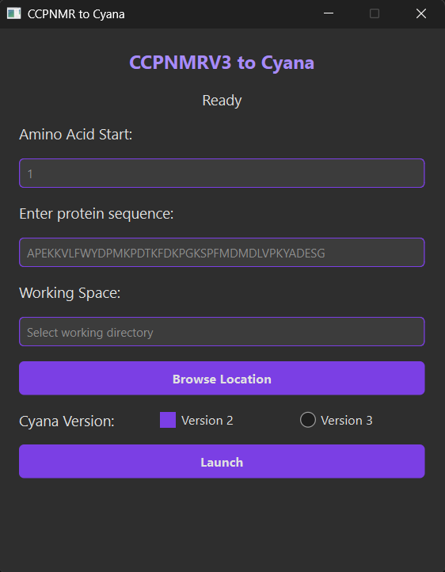

Outil de conversion pour l'analyse de données RMN
Le CCPNMR v3 to Cyana Convertor est un outil développé pour faciliter le travail des chercheurs en RMN (Résonance Magnétique Nucléaire). Il permet de convertir automatiquement les données issues du logiciel CCPNMR Analysis v3 vers le format compatible avec CYANA, évitant ainsi des heures de travail manuel fastidieux.

Dans le domaine de la recherche en biologie structurale, les scientifiques utilisent différents logiciels pour analyser leurs données RMN. Passer de CCPNMR Analysis v3 à CYANA nécessitait auparavant :
J'ai développé un outil avec interface graphique qui automatise entièrement ce processus, permettant aux chercheurs de se concentrer sur l'analyse plutôt que sur la manipulation de fichiers.
Langage principal du projet, choisi pour sa simplicité et sa puissance dans le traitement de données.
Framework pour l'interface graphique, permettant de créer une application desktop moderne et réactive.
Manipulation de donnée complexe en format CSV
💬 Des questions sur ce projet ? N'hésitez pas à me contacter !